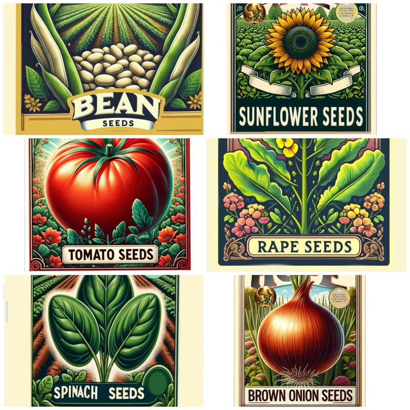
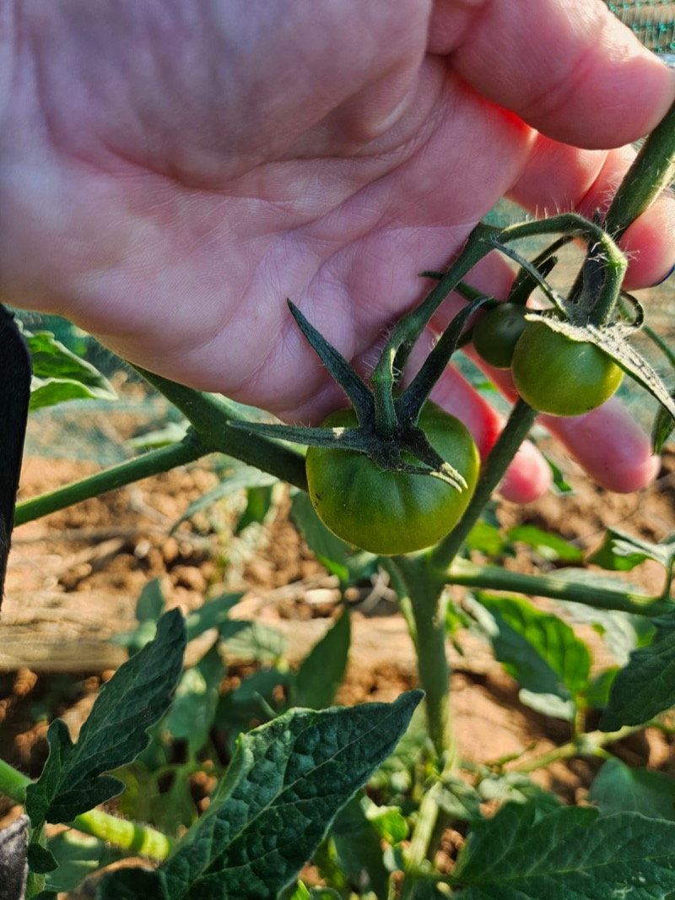
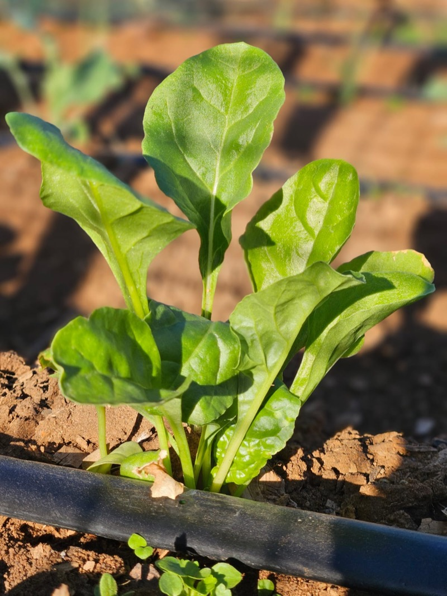
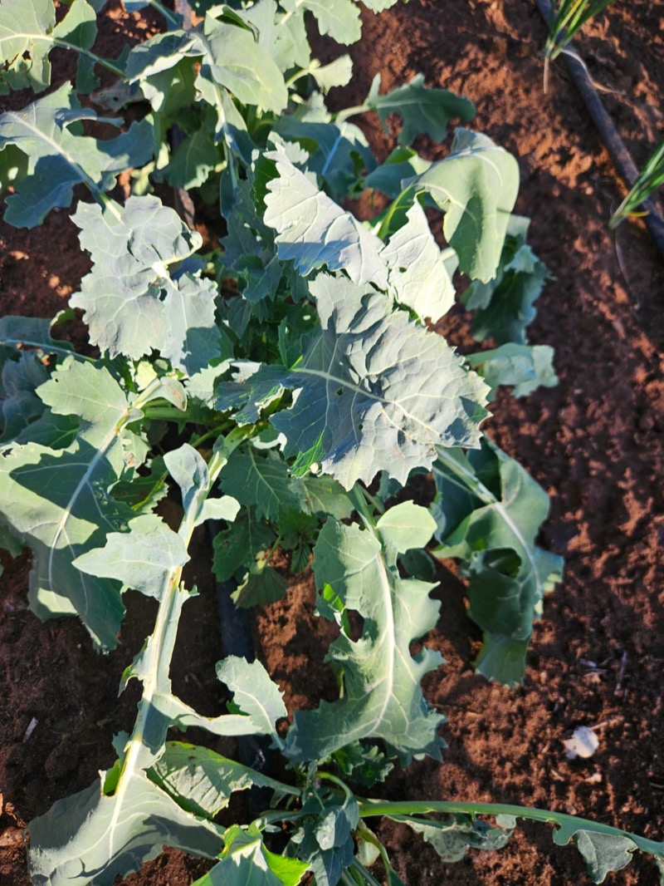
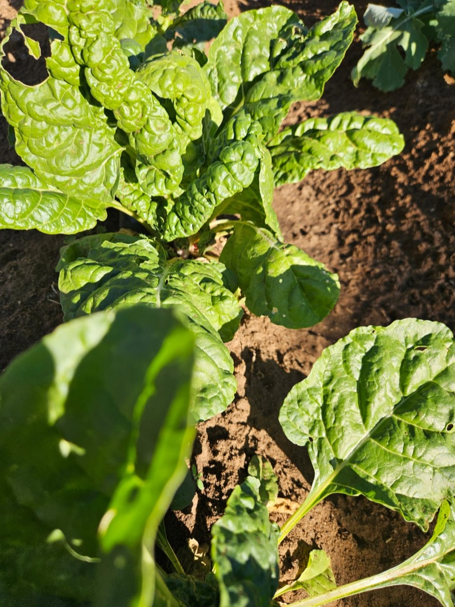

Three Essentials. One Kit. A Lifetime of Harvests.
Every component is selected for African conditions — drought-resistant, sustainable, and simple to use.
Premium Drought-Resistant Seeds
Every kit includes a carefully selected mix of vegetable seeds bred for Africa's diverse climates. These aren't generic seeds — they're varieties proven to thrive in heat, resist drought, and produce high yields even in poor soil.
What's Included
- Leafy greens (spinach, Swiss chard, moringa)
- Tomatoes (heat-tolerant varieties)
- Onions and garlic
- Indigenous vegetables (amaranth, cowpeas)
- Herbs (coriander, parsley)
Why These Seeds
Each variety is selected for three qualities: drought resistance, nutritional density, and the ability to produce seeds for the next planting cycle — creating a self-sustaining food source.


Bucket Watering System
Water is precious in most of Africa. Our gravity-fed drip irrigation system uses up to 70% less water than traditional watering methods — and it's built from a simple bucket, tubing, and drip emitters.
How It Works
Fill the bucket, elevate it, and gravity does the rest. Water drips slowly and directly to each plant's roots — no waste, no evaporation, no electricity needed.
Built to Last
Designed for durability and easy repair with locally available materials. Works across multiple growing seasons with minimal maintenance.
Organic Bio-Fertiliser
Depleted soil is one of Africa's biggest agricultural challenges. Our bio-fertiliser uses beneficial microbes to restore soil health naturally — no chemicals, no environmental damage.
The Science
Beneficial bacteria and fungi break down organic matter, fix nitrogen from the air, and make phosphorus available to plant roots. The result: healthier soil that produces more food.
Long-Term Impact
Unlike chemical fertilisers that deplete soil over time, bio-fertiliser improves soil with every application. Each season, the soil gets more fertile — not less.

From Kit to Harvest




Frequently Asked Questions
Most varieties produce their first harvest within 6-8 weeks. Leafy greens like spinach can be harvested as early as 4 weeks.
No. Every kit includes a step-by-step planting guide written in simple language. Designed for first-time growers.
A kit works in a space as small as 4 square metres — backyards, community plots, school gardens, or even large containers.
Yes. Our open-pollinated varieties mean you can save seeds from your harvest and plant them again — creating a self-sustaining cycle.
South Africa, Zimbabwe, Mozambique, Malawi, and Tanzania. We're expanding as our network grows.
R1,500. One Kit. A Family Fed.
Every kit contains all three components — seeds, watering system, and bio-fertiliser. Ready to change a life?